在中欣网校除了网校移动端、题库系统设计等UI工作，还有一些网站运营图相关设计

在中欣网校除了网校移动端、题库系统设计等UI工作，还有一些网站运营图相关设计
转行UI设计之前从事做运营/平面设计，运营相关的工作主要是公众号、微博定期推送内容，内容公司活动宣传，公司品牌IP漫画定期推送，我主要负责写文案、视觉设计、视频剪辑
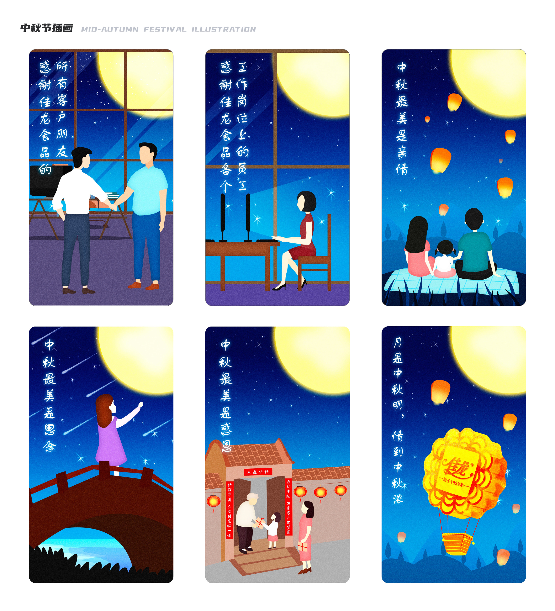
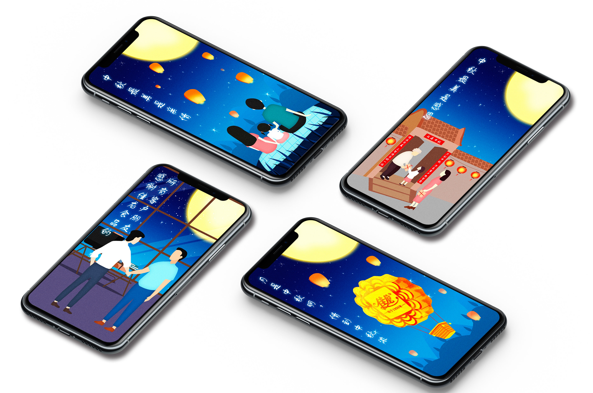
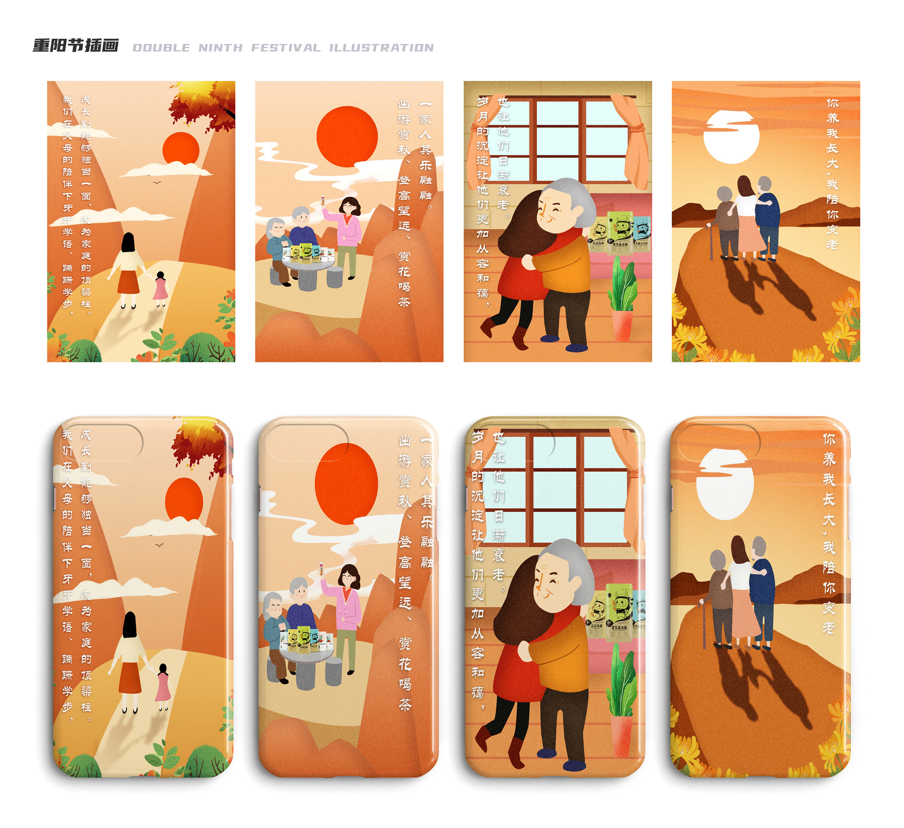
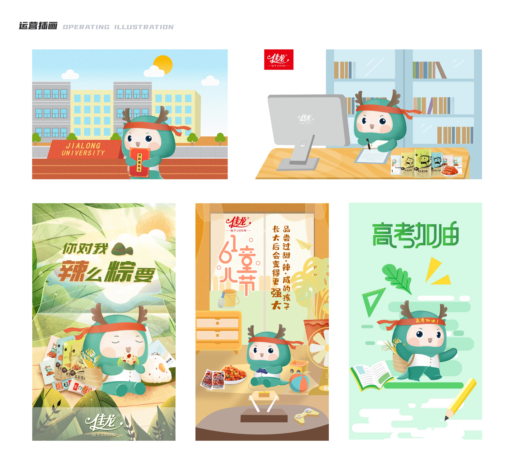
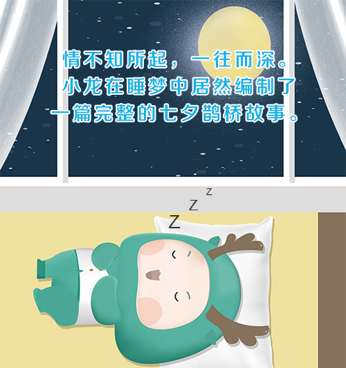
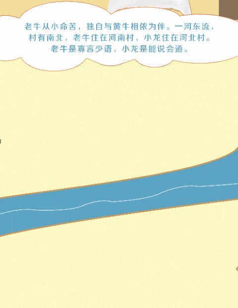
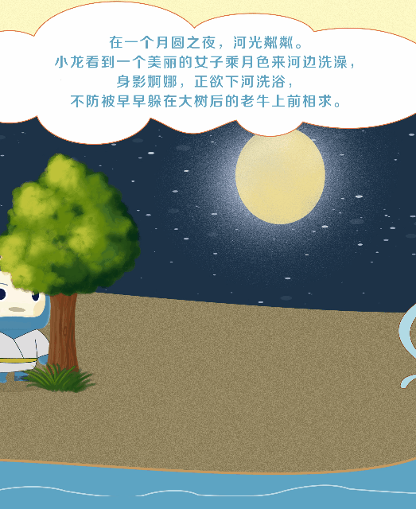
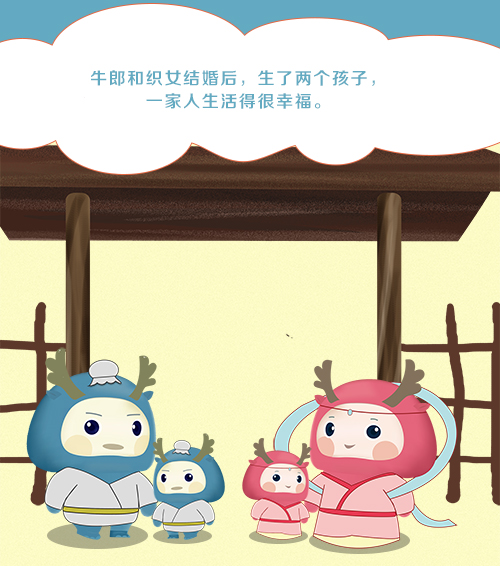
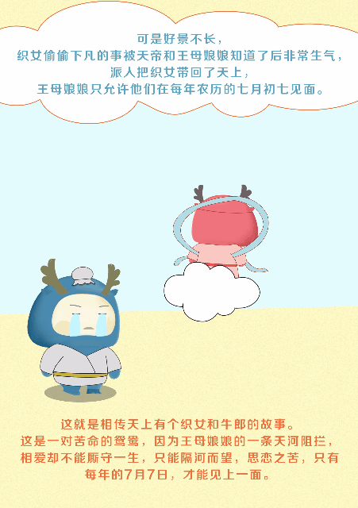
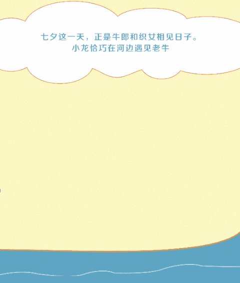
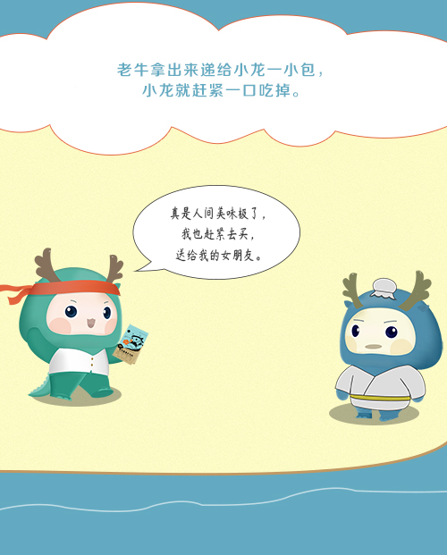
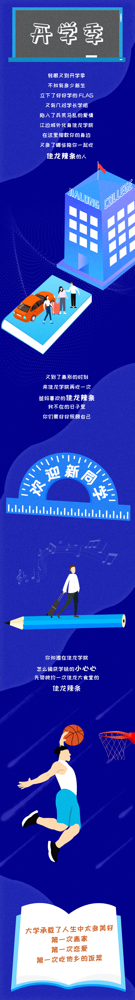
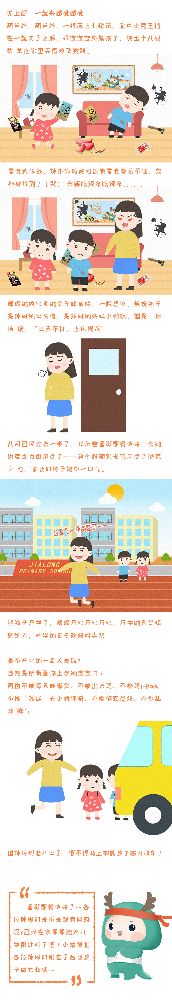
市场终端相关的平面设计，含终端物料，终端操作手册等设计
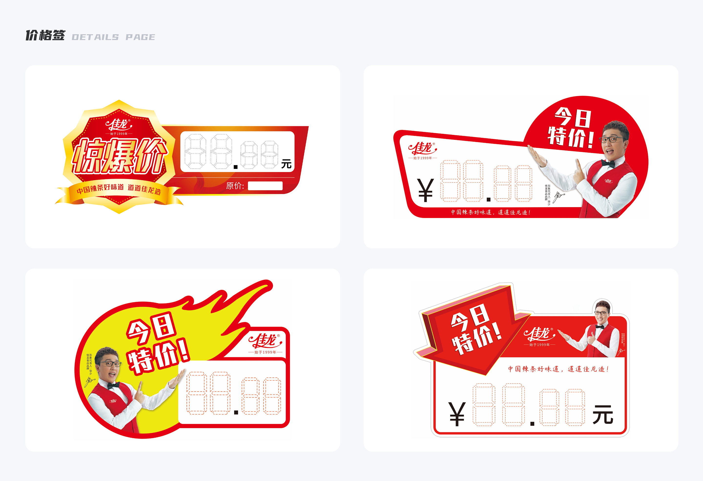
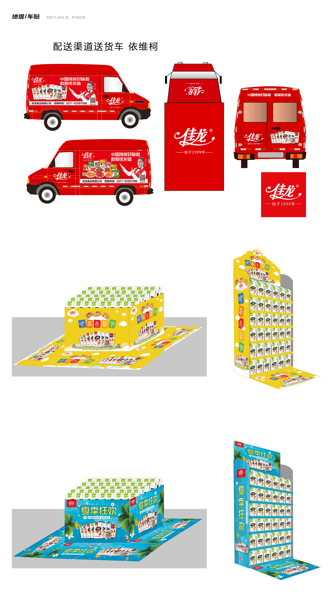
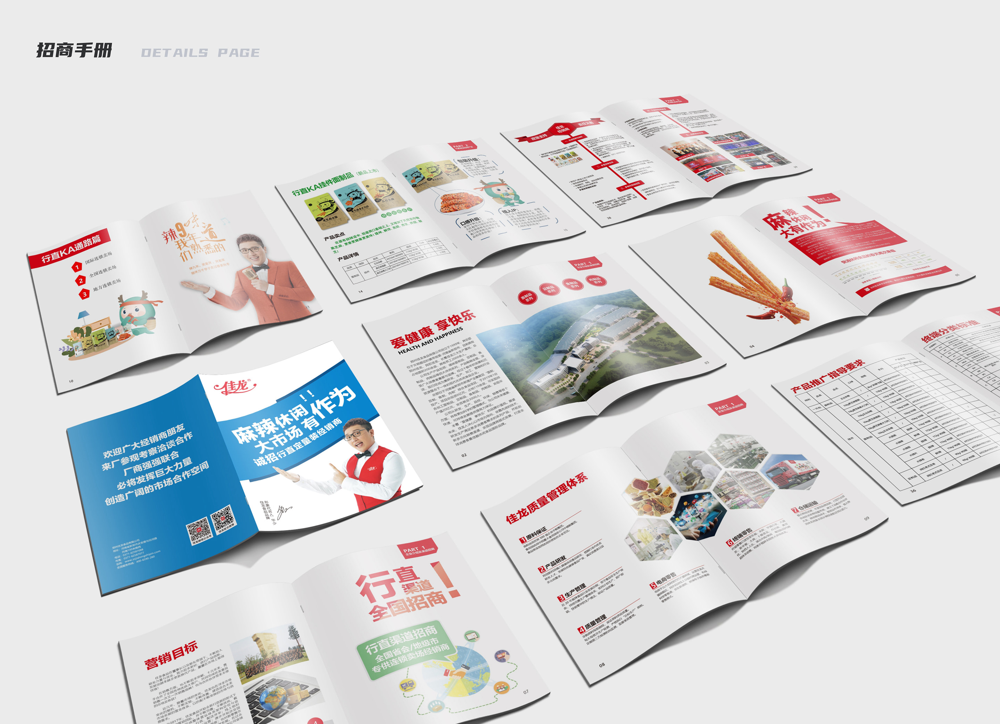